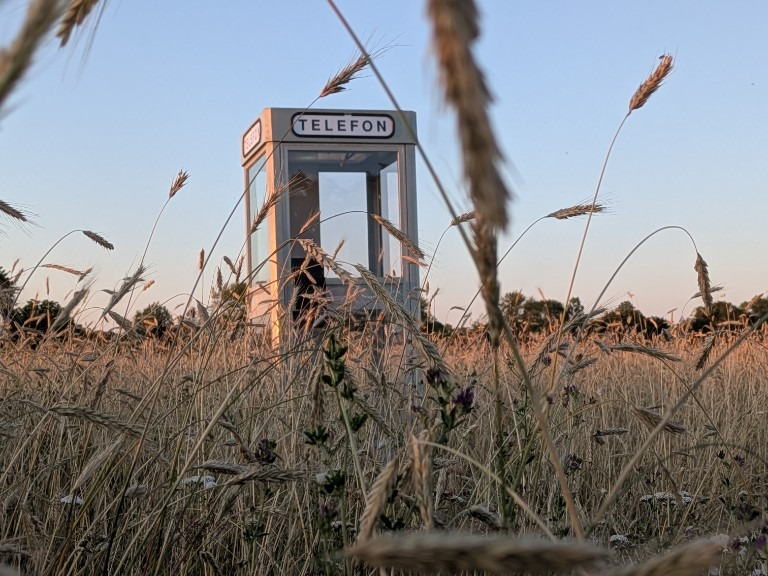

Österlen


Om
Baltsar.
Konstnär och utvecklare på Österlen.
Bygger fysiska installationer i gränslandet mellan teknik, röst och system. Arbetar från ett före detta bankhus.
Österlen

Baltsar.
Konstnär och utvecklare på Österlen.
Bygger fysiska installationer i gränslandet mellan teknik, röst och system. Arbetar från ett före detta bankhus.